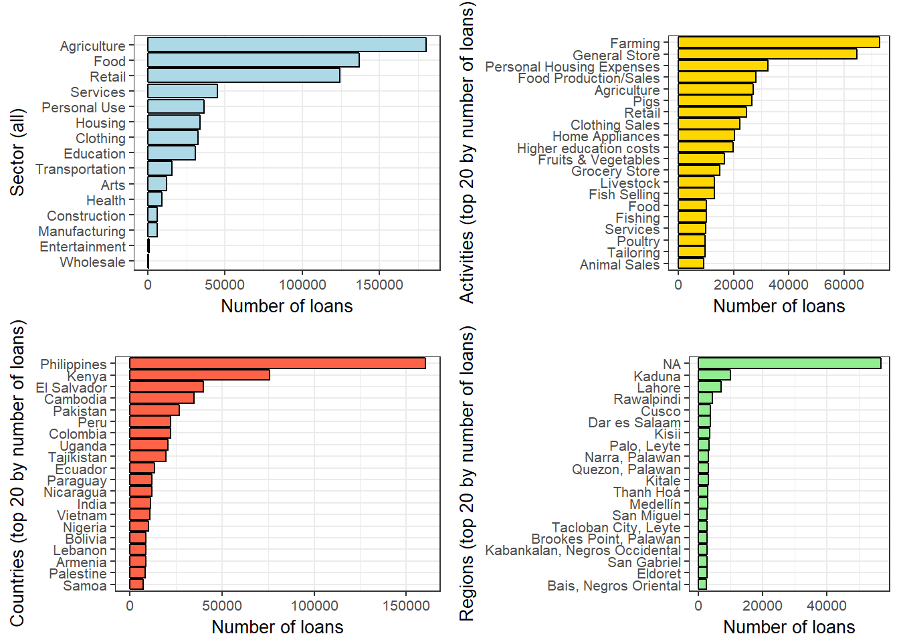
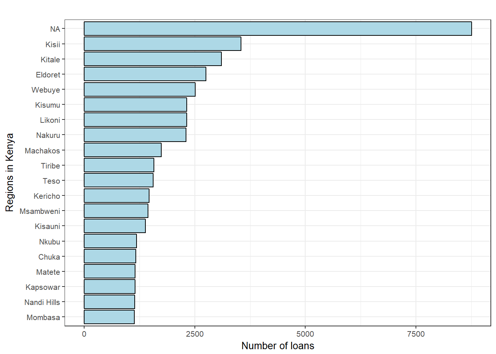
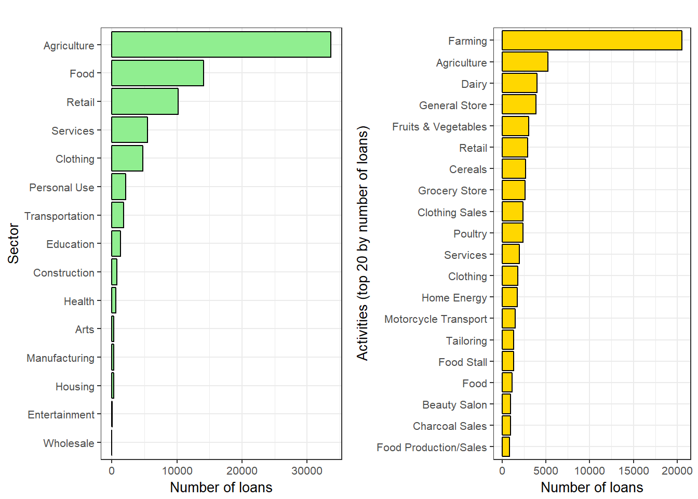
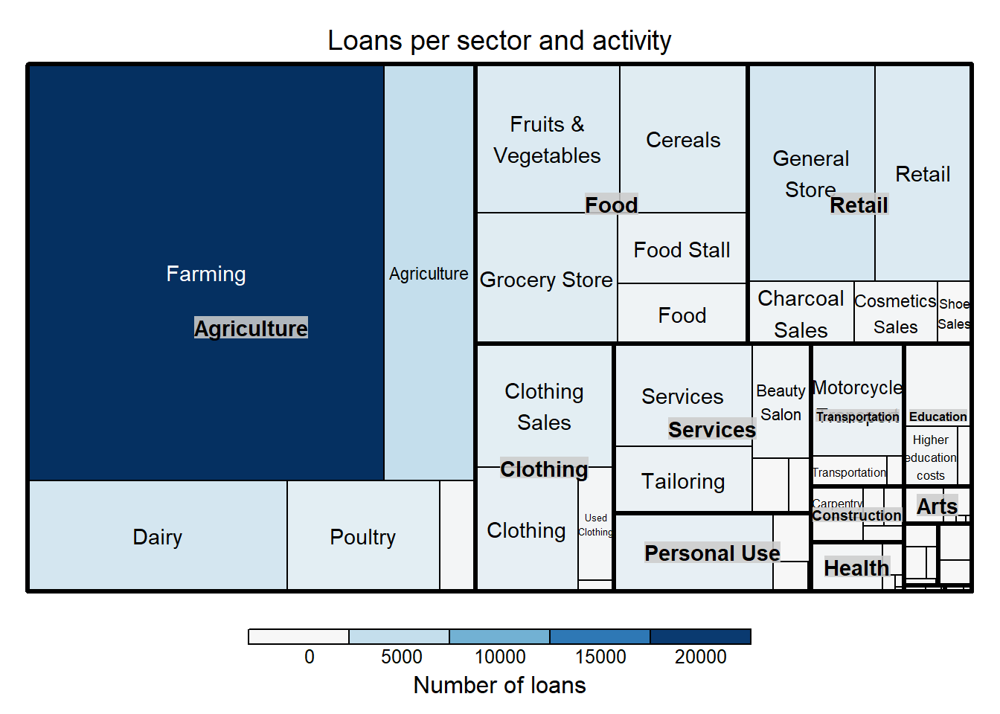
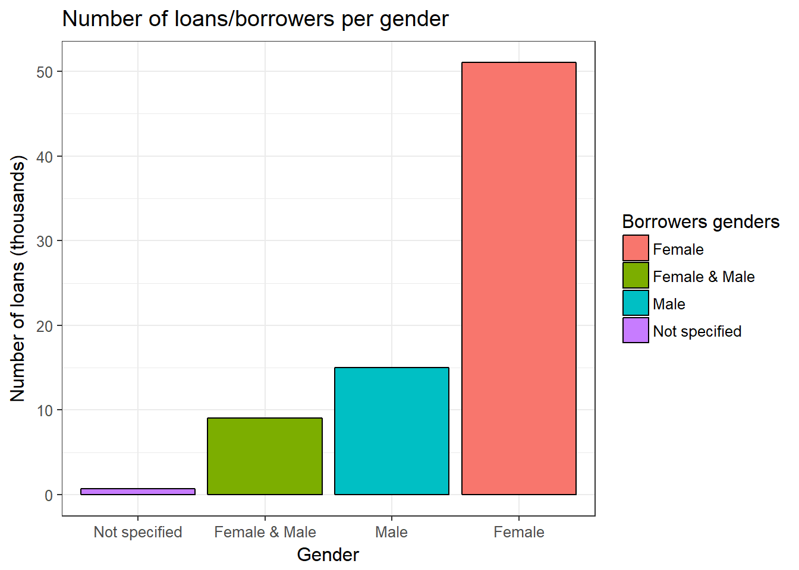
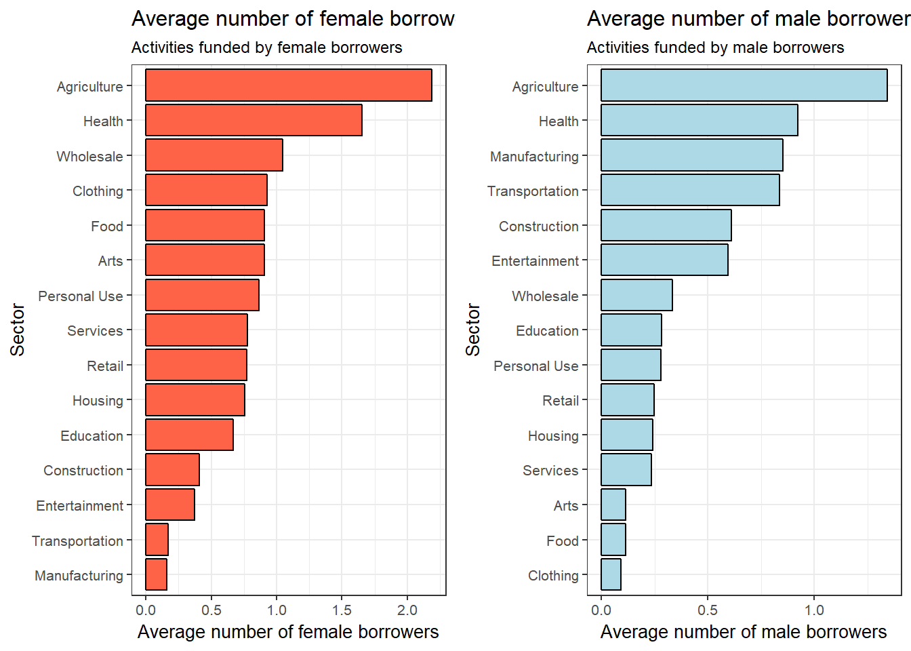
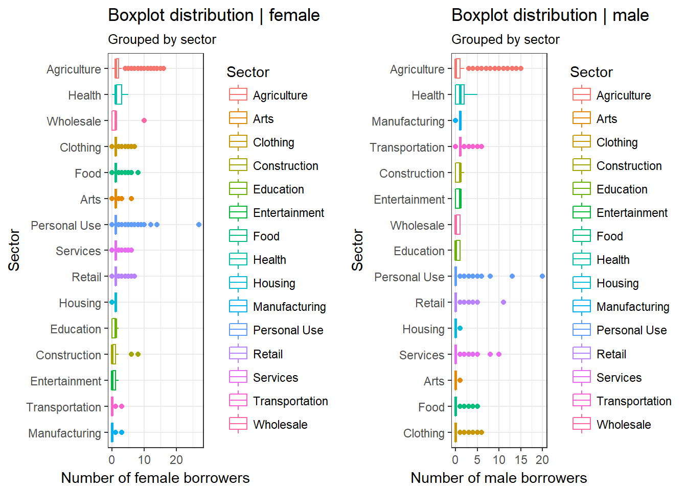

Kiva is an online lending platform connecting online lenders to entrepreneurs across the globe. Kiva’s mission is to connect people through lending to alleviate poverty. Kiva relies on a network of field partners to administer the loans on the ground. These field partners can be microfinance institutions, social businesses, schools or non-profit organizations. Kiva does not collect any interest on the loans it facilitates and is supported by grants, loans, and donations from the platform’s users.
Recently, Kiva invited the kaggle community to assist build more localized models to estimate the welfare of residents in the regions where Kiva has active loans. In this post we start by gleaning insights through analysis and visualization of the data provided by Kiva. Special attention is paid to borrowing patterns from Kenya.
We begin by loading the data and the requisite R libraries.
loans_df <- read_csv('data/kiva/kiva_loans.csv')The dataset comprise a total of 617,205 loans, funding 163 activities in 15 sectors in 87 countries. Kiva loans are issued across a total of 12,696 regions in the different countries with 67 different currencies.
Sectors, top 20 activities, countries and regions by number of loans
Kenya ranked second with a total of 75,825 loans having been issued. Philippines tops the list with 160,441 loans while El Salvado was third with a totals of 39,875 loans. Uganda and Nigeria were the only other countries that featured among the top 20 countries. Whether these countries are among the most active in microfinance in Africa or not, is subject to further investigation.

Loan Statistics for Kenyan borrowers?
A total of KES34,534,300 has been disbused to 75,825 borrowers in across 393 regions in Kenya. Kisii region account for the highest number of loans with a total of 3546 loans issued.The graph below show the top 20 regions in Kenya by number of loans.Most loan applications did not however capture the region.

Which were the top funded sectors and activities by Kenyan borrowers?
Over 50% of loans issued were directed to the agricultural sector. This was followed by food and retail at 14 and 13.5 respectively. Farming on the other hand was the highest funded activity from Kiva loans.  Loans per region  Distribution of female and male borrowers  Which activities did the different genders direct their loans to?
Both the female and male genders used their loans to fund agriculture and health. The least amount of loan for the female was directed to manufacturing while for male was towards clothing. 

In part II of the post, we shall combine Kiva datasets with data from other related sources to and attempt to determine the well-being of people in different regions in Kenya.
Mobile payment and credit data from the banks, if available, would be a valuable source of data. Perhaps going forward, telcos and other institutions in Kenya can consider anonymizing and releasing these datasets. This will go a long way in promoting data analytics for social good and in general invigorating the Artificial Intelligence ecosystem in Kenya.
Email: stevemutuvi@gmail.com